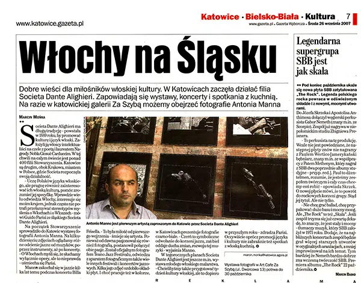

MOSTRE FOTOGRAFICHE SUL JAZZ:
Rassegne
- Teano Jazz Festival - luglio 2004
- Autumn Jazz Festival di Campobasso - ottobre 2004 e 2005
- Jazz Flirt festival di Formia (Lt) - agosto 2005
- Jazz club "La Palma" di Roma - marzo/aprile 2006
- Art-Cafe "Za drzwiami" di Katowice (Poland) settembre 2007

Mostre
Katowice (PL) 2007 - Galleria Za Szyba
Articolo Katowice 2007
"Italiani in Slesia"
Buone notizie per gli amanti della cultura italiana. A Katowice ha iniziato a operare la filiale della Societa Dante Alighieri. Stanno organizzando mostre, concerti e spettacoli con artisti provenienti dalla penisola appenninica. Per ora possiamo vedere le fotografie di Antonio Manno nella galleria di Katowice Za Szyba.
A Katowice ha iniziato a operare la filiale della Societa Dante Alighieri che ha una lunga tradizione: e stata fondata nel 1889 con l'obiettivo di promuovere la cultura e la lingua italiana. I suoi fondatori furono il poeta e premio Nobel Giosue Carducci. Nel corso della sua esistenza ha superato 400 filiali. Katowice e la seconda, dopo Cracovia, citta in Polonia dove la Societa ha iniziato le sue attivita.
L'obiettivo della Societa e la lingua italiana, ma vogliamo anche promuovere la cultura italiana, aiutare a comprenderla. Per il giorno di San Silvestro la Societa ha portato a Katowice una mostra fotografica di Antonio Manno. A Katowice presenta fotografie in bianco e nero, dalle radici della luce allo sviluppo della loro vita spirituale interna.
Sotto la lente del fotografo sono finiti diversi bambini che guardano il mondo in modi diversi, giocano, a volte ridono. Fotografie, ritratti, paesaggi - tutto questo cattura la passione. E rimasto fotografo ufficiale del Teano Jazz Festival, ha visitato anche molti altri festival e concerti jazz. Ecco perche il suo obiettivo cattura anche jazzisti e musicisti di blues di fama mondiale.